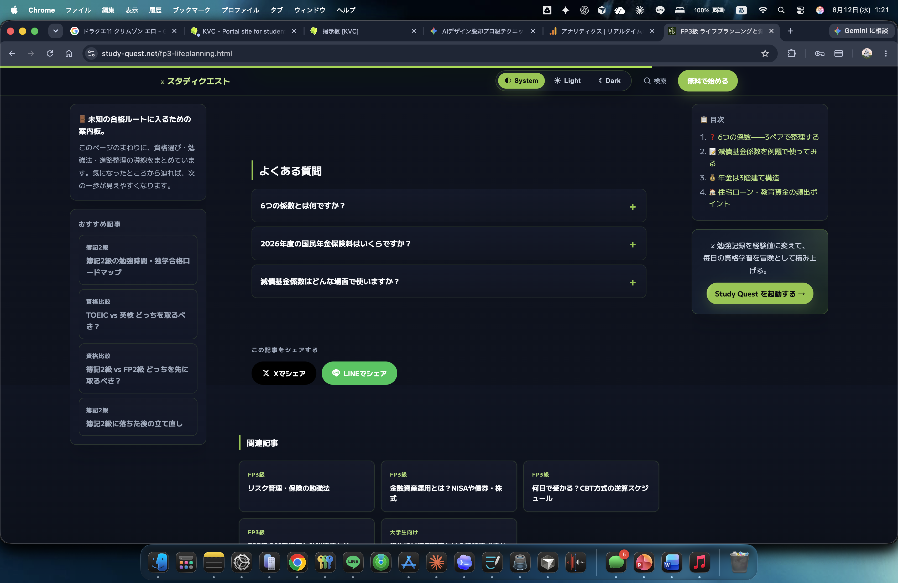
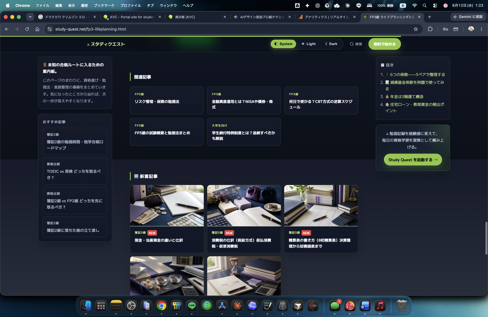

色・文字・余白・導線・操作感まで。
AI感のある既存サイトを、事業らしい世界観へ再設計します。
見た目だけでなく、次の行動へ進みやすい設計へ。
長い記事でも、見出し・目次・関連導線を整理し、
読み終えた後の次の行動まで設計します。

関連記事・カテゴリ・CTAを、
読者の流れを止めない導線として設計します。

AIやテンプレートで作ったが印象に残らない。サービスの強みが画面で伝わらない。そんな既存サイトを、目的に合わせて再設計します。
対象ページ、目的、納期、実装環境、素材を確認します。
現状の課題と、目指す世界観・優先順位を言語化します。
構成とデザインの方向性を共有し、認識を揃えます。
PC・スマホの操作感まで含め、静的フロントを実装します。
確認後に調整し、HTML／CSS／JavaScript一式を納品します。